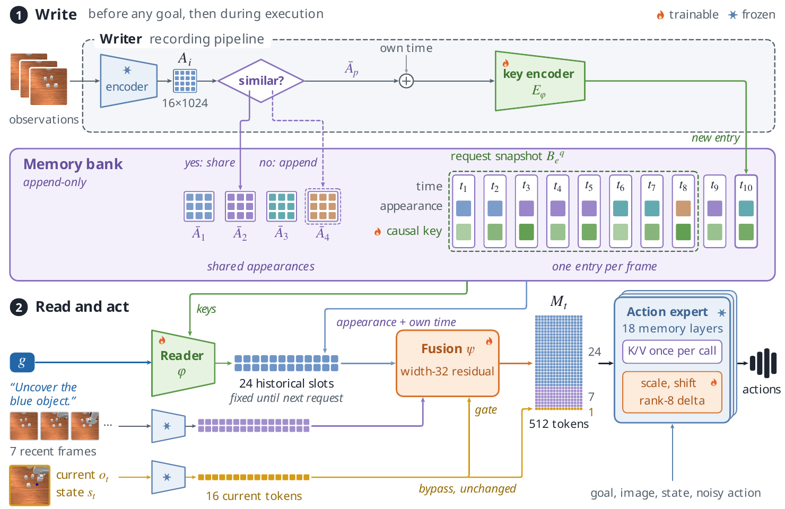

Case preparation and return
Select two closed cases by their contents, then return the USB case to the position seen earlier.
- USB to left tray
- SD to right tray
- Return USB case
A robot sees what’s inside two cases and where they started. After the cases are closed and moved, the same record guides the choice of case and where to return it.


Robots experience the world before they know how that experience will be used. ReuseMem learns to retrieve visual evidence from one memory for multiple later manipulation goals. It connects past observations to the current scene, so the same experience remains useful after earlier actions move objects. Across four simulation tasks and two physical scenarios, we evaluate independent requests and continuous sequences. ReuseMem improves joint goal completion by 24.5 percentage points over uniform memory.
A single memory bank serves each new request. The policy combines the retrieved evidence with the current scene to decide what to do next.
Swipe to follow the flow →
Observations enter the Writer and become time-indexed visual memory.
Frames visualize stored features. Both requests use the same recorded bank.

Two SO101 scenarios show different ways to reuse a record through three consecutive requests.
Select two closed cases by their contents, then return the USB case to the position seen earlier.

Use the toy’s original position to select it, brush the spot it has vacated, and put it back.
In each scenario, all three independent requests succeeded on 14 of 20 recordings. All three requests succeeded without a reset in 13 of 20 sequences.
The same observation history guides two different requests. Watch each request separately and both in sequence.
Watch where the cube is placed before and after the press.
Watch the cube placements.
Return the cube to its last location before the press.
Return the cube to its first location after the press.
Two requests, without resetting the scene.
Return the cube to its last location before the press.
Watch the order in which the cube visits the locations.
Watch the order of the placements.
Return the cube to the first recorded location.
Return the cube to the second recorded location.
Two requests, without resetting the scene.
Return the cube to the first recorded location.
Watch the cubes get covered and the covers swap places.
See both cubes.
Uncover the blue cube.
Uncover the red cube.
Two requests, without resetting the scene.
Uncover the blue cube.
Watch which cube lights up first and which lights up second.
First highlighted cube.
Bring the first highlighted cube to the front.
Bring the second highlighted cube to the front.
Two requests, without resetting the scene.
Bring the first highlighted cube to the front.
Simulation clips are task demonstrations using a scripted controller.
The same request, two different choices. The robot must follow the hidden object through the cover swap.
Comparison layout preview. Both clips are scripted illustrations, not model evaluation rollouts.
The blue cube is revealed.
The red cube is revealed.
+24.5 pp
All-goal success over Uniform-Memory across four tasks
Both requests succeed using the same observation history.
Each recording is fixed before the later requests are revealed. In the independent trials, every request starts from the same post-recording scene and memory. In the sequential trials, each request starts from the state left by the preceding action.
Simulation uses 50 common recordings per task and two requests per recording. Each real-world scenario uses 20 recordings and three requests. The policy receives camera observations, robot state, timestamps, and the revealed request. Evaluator labels for identities, origins, and cues are held out.
| Task | Goal 1 | Goal 2 | All-goal | Sequence |
|---|---|---|---|---|
| VideoPlaceButton | 44 | 45 | 40 | 38 |
| VideoPlaceOrder | 42 | 40 | 34 | 34 |
| VideoUnmaskSwap | 25 | 23 | 15 | 13 |
| PickHighlight | 40 | 39 | 32 | 31 |
Higher success across later goals, with a fast response and a compact memory bank.
All-goal success (%)
Time to the first command (ms)
All-goal success (%)
Retained memory (MiB)
Removing the relevant history reduces success. Removing unrelated observations has little effect.
@misc{kang2026reusemem,
title = {ReuseMem: One Memory, Multiple Goals in Robot Manipulation},
author = {Yoonseok Kang and Dayeon Jung and Seunghoon Jeon and
Wonjib Kim and Dongchul Park},
year = {2026},
eprint = {2611.21115},
archivePrefix = {arXiv},
primaryClass = {cs.RO},
url = {https://arxiv.org/abs/2611.21115}
}